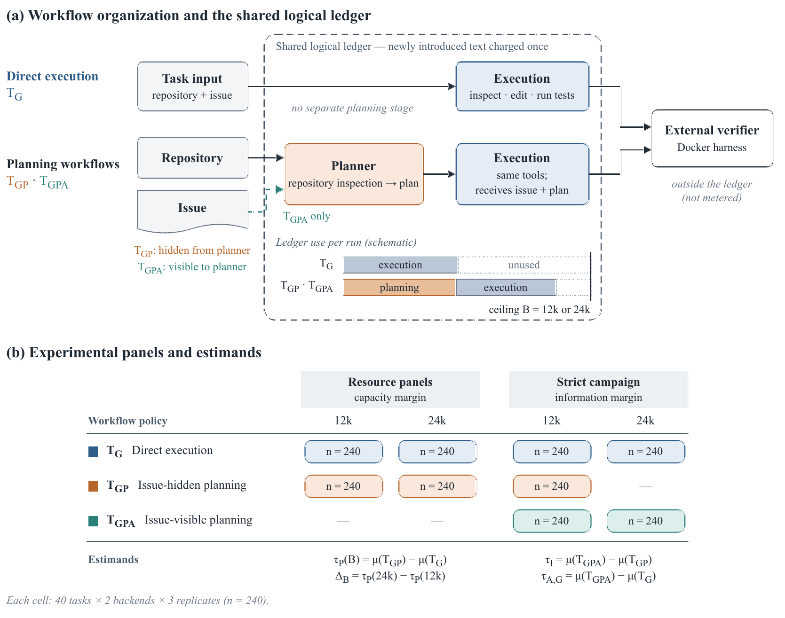
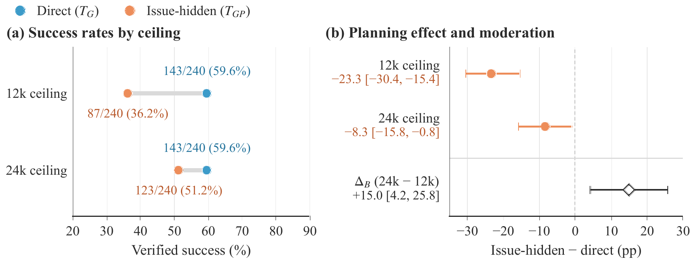
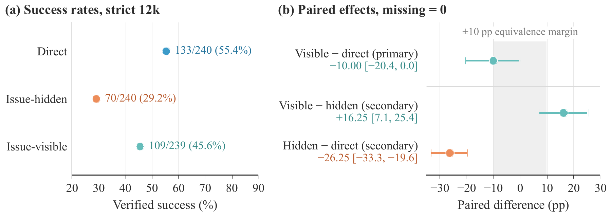

02 · Production 02 · 生产组织
The Organization of Inference: Information, Resource Constraints, and AI Production
arXiv:2609.20449 [cs.AI] · Submitted 17 September 2026 · 40 SWE-bench Verified tasks arXiv:2609.20449 [cs.AI] · 2026 年 9 月 17 日提交 · 40 个 SWE-bench Verified 任务

Abstract摘要
The economic value of inference depends on how capacity and task information are distributed across stages of AI production. We study these organizational margins using controlled workflow experiments on externally verified software-engineering tasks. In two matched resource panels, direct execution records the same success rate of 59.6 percent at logical-token ceilings of 12,000 and 24,000, while success under information-constrained planning rises from 36.2 to 51.2 percent. The planning disadvantage narrows by 15.0 percentage points (95 percent task-cluster bootstrap interval: 4.2 to 25.8). A strict read-only planning campaign varies whether the planner sees the task issue. At 12,000 tokens, issue access raises success by about 16 percentage points over issue-hidden planning. Compared with direct execution, task-informed planning is about 10 points lower at 12,000 tokens; at 24,000 tokens, it shows a 29.6-point advantage. In the resource panels, direct execution uses substantially less than either ceiling, while the planning workflow's binding rate falls from 46.2 to 0.8 percent and downstream execution accounts for 89.9 percent of the increase in total use. Scale determines the capacity available to a system; workflow and information structure shape the productive value realized from it.
推理的经济价值，取决于算力与任务信息如何分配到 AI 生产的各个阶段。我们在外部可验证的软件工程任务上，用受控工作流实验研究这两条组织边际。在两个配对的资源面板中，直接执行在 12,000 与 24,000 逻辑 token 上限下的成功率同为 59.6%，而信息受限的规划工作流从 36.2% 升至 51.2%，规划劣势收窄 15.0 个百分点（95% 任务聚类自助区间 4.2 至 25.8）。一项严格只读的规划实验则改变规划者能否看到任务描述：在 12,000 token 下，能看到任务使成功率比隐藏任务的规划高出约 16 个百分点。与直接执行相比，任务已知的规划在 12,000 token 下低约 10 个百分点，而在 24,000 token 下高出 29.6 个百分点。在资源面板中，直接执行的用量远低于两个上限，而规划工作流的触顶率从 46.2% 降至 0.8%，下游执行占总用量增幅的 89.9%。规模决定系统能拿到多少算力，工作流与信息结构决定其中多少转化为产出。
Key findings核心发现
- A larger budget only pays for some workflows. Doubling the ceiling leaves direct execution unchanged at 59.6 percent — 143 of 240 assignments in each panel — while planning rises from 36.2 to 51.2 percent. The moderation estimate is +15.0 pp, 95% interval [4.2, 25.8], task sign-flip p = .013. 更大的预算只对某些工作流有用。上限翻倍后，直接执行原地不动，仍是 59.6%（每个面板 240 次中成功 143 次），而规划工作流从 36.2% 升到 51.2%。调节效应估计为 +15.0 个百分点，95% 区间 [4.2, 25.8]，任务符号翻转检验 p = .013。
- The planning penalty never fully closes. At 12k, issue-hidden planning costs 23.3 percentage points relative to direct execution (95% interval [−30.4, −15.4]). At 24k the gap is still negative, and that individual contrast is sensitive to the inference procedure at the .05 threshold (sign-flip p = .056). 规划的惩罚始终没有完全消失。在 12k 下，隐藏任务的规划相对直接执行损失 23.3 个百分点（95% 区间 [−30.4, −15.4]）。在 24k 下差距仍为负，且该单项对比在 .05 门槛上对推断方法敏感（符号翻转 p = .056）。
- Information, not just capacity, makes planning productive. Within the same strict read-only planning contract, giving the planner the issue raises success by about 16 points at 12k, and the effect survives Holm correction. An issue-hidden planner spends roughly half the budget on a plan that cannot target the actual problem. 让规划有产出的是信息，而不只是算力。在同一份严格只读的规划契约下，把任务描述交给规划者，在 12k 下使成功率提高约 16 个百分点，且经 Holm 校正后依然显著。看不到任务的规划者，大约把一半预算花在了一份无法瞄准真实问题的方案上。
- The displacement cost is visible in the ledger. The planning workflow's binding rate falls from 46.2 to 0.8 percent as the ceiling doubles, mean execution use rises from 5,207 to 6,531 logical tokens, and downstream execution accounts for 89.9 percent of the increase in total use. Direct execution has substantial unused capacity at both ceilings. 挤出成本在账本里看得见。上限翻倍后，规划工作流的触顶率从 46.2% 降至 0.8%，平均执行用量从 5,207 升至 6,531 个逻辑 token，下游执行占总用量增幅的 89.9%。而直接执行在两个上限下都有大量闲置容量。
Figures图表


BibTeX
@misc{zhang2026inference,
title = {The Organization of Inference: Information, Resource
Constraints, and AI Production},
author = {Zhang, Yukun and Xu, Kemu and Chen, Yishen},
year = {2026},
eprint = {2609.20449},
archivePrefix = {arXiv},
primaryClass = {cs.AI},
url = {https://arxiv.org/abs/2609.20449}
}